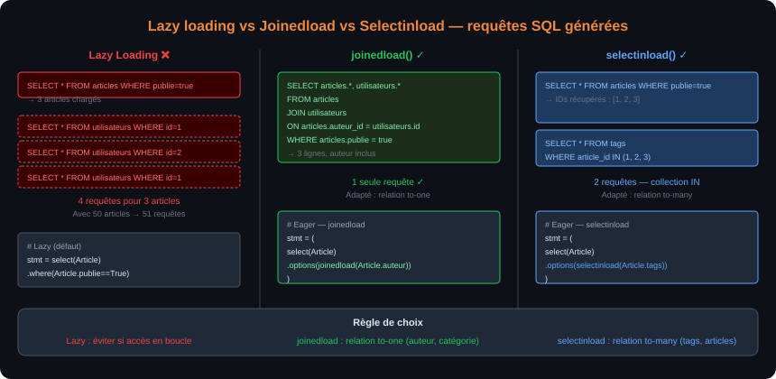
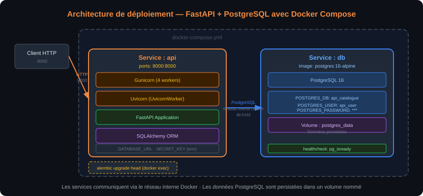

À l'issue de ce chapitre, chaque stagiaire est capable de :
- Expliquer le lazy loading et l'eager loading et choisir la stratégie adaptée
- Identifier et corriger le syndrome des N+1 requêtes avec
joinedload()etselectinload() - Injecter une Session SQLAlchemy par requête HTTP dans FastAPI via
Depends(get_db) - Concevoir les schémas Pydantic de sortie compatibles avec les modèles SQLAlchemy (
from_attributes=True) - Implémenter un CRUD complet (Create, Read, Update, Delete) sur des modèles persistés
- Connecter le flux d'authentification JWT au modèle
Utilisateuren base de données - Déployer le projet complet avec Docker Compose (API + PostgreSQL)
Lazy loading — le comportement par défaut
Par défaut, SQLAlchemy utilise le lazy loading pour les relations : quand on accède à un attribut de relation (ex. article.auteur), SQLAlchemy exécute un SELECT supplémentaire au moment de l'accès. Ce comportement est pratique mais peut devenir problématique.
from sqlalchemy import select
from models import Article
stmt = select(Article).where(Article.publie == True)
articles = db.execute(stmt).scalars().all()
# Chaque accès à article.auteur exécute un SELECT supplémentaire !
for article in articles:
print(article.auteur.username) # SELECT * FROM utilisateurs WHERE id = ?
Si on récupère 50 articles et qu'on accède à leur auteur, cela génère 50 requêtes supplémentaires : c'est le syndrome des N+1.
Le syndrome des N+1 requêtes
Le problème des N+1 (N+1 query problem) est l'une des causes les plus fréquentes de lenteur dans les applications utilisant un ORM. Il se produit quand :
- Une première requête charge N entités (1 requête)
- Pour chaque entité, une requête supplémentaire charge sa relation (N requêtes) Total : N+1 requêtes au lieu d'une seule bien formulée.
# ❌ N+1 problème
articles = db.execute(select(Article)).scalars().all() # 1 requête
for article in articles:
print(article.auteur.username) # +1 requête par article → N requêtes
# 51 requêtes pour 50 articles !
Avec 10 articles en développement, l'impact du N+1 est imperceptible. En production avec 1 000 articles, chaque appel à l'endpoint génère 1 001 requêtes SQL — la base de données est surchargée et la réponse prend des secondes. Toujours mesurer avec des outils de profiling SQL avant de déployer.
Eager loading — charger les relations en avance
SQLAlchemy propose deux stratégies d'eager loading qui résolvent le N+1 :
joinedload() : charge les relations avec un JOIN dans la même requête principale. Efficace pour les relations 1-à-1 et 1-à-n côté "many" (ex. article + son auteur).
from sqlalchemy.orm import joinedload
# Une seule requête avec JOIN
stmt = (
select(Article)
.where(Article.publie == True)
.options(joinedload(Article.auteur)) # JOIN avec la table utilisateurs
)
articles = db.execute(stmt).unique().scalars().all()
# Maintenant article.auteur ne déclenche plus de requête SQL
for article in articles:
print(article.auteur.username) # Données déjà chargées — 0 requête supplémentaire
selectinload() : charge les relations avec une deuxième requête IN (plus efficace que joinedload pour les collections — relations 1-à-n côté "one" ou n-à-n).
from sqlalchemy.orm import selectinload
# Deux requêtes : 1 pour les articles, 1 pour tous les tags en une fois
stmt = (
select(Article)
.options(selectinload(Article.tags)) # SELECT ... WHERE article_id IN (1, 2, 3, ...)
)
articles = db.execute(stmt).scalars().all()
joinedload(): relation to-one (article → auteur) — le JOIN est efficace car une seule ligne par articleselectinload(): relation to-many (utilisateur → ses articles, article → ses tags) — le JOIN duplique les lignes etunique()est requis,selectinloadavec unINest généralement plus propre

Le schéma ci-dessus compare les trois stratégies de chargement pour 3 articles avec leurs auteurs : lazy loading génère 4 requêtes (1 + 3×1), joinedload génère 1 requête avec JOIN, selectinload génère 2 requêtes (la collection en une seule requête IN).
Charger plusieurs niveaux de relation
# Charger articles + auteur + tags en une passe
stmt = (
select(Article)
.options(
joinedload(Article.auteur),
selectinload(Article.tags),
)
)
Requêtes avec agrégations avancées
from sqlalchemy import func, case, literal_column
# Nombre d'articles publiés et non publiés par auteur
stmt = (
select(
Utilisateur.username,
func.count(case((Article.publie == True, 1))).label("publies"),
func.count(case((Article.publie == False, 1))).label("brouillons"),
)
.join(Article, Article.auteur_id == Utilisateur.id)
.group_by(Utilisateur.username)
.having(func.count(Article.id) > 0)
.order_by(func.count(Article.id).desc())
)
# Sous-requête (subquery)
nb_articles_subq = (
select(func.count(Article.id))
.where(Article.auteur_id == Utilisateur.id)
.scalar_subquery()
)
stmt = select(Utilisateur, nb_articles_subq.label("nb_articles"))
Session par requête avec Depends
L'intégration de SQLAlchemy dans FastAPI repose sur le système de dépendances : une fonction get_db crée une Session pour chaque requête HTTP et la ferme automatiquement à la fin, qu'il y ait eu une exception ou non.
# database.py
from sqlalchemy import create_engine
from sqlalchemy.orm import sessionmaker, Session, DeclarativeBase
from typing import Generator
DATABASE_URL = "sqlite:///./app.db"
engine = create_engine(DATABASE_URL, connect_args={"check_same_thread": False})
SessionLocal = sessionmaker(autocommit=False, autoflush=False, bind=engine)
class Base(DeclarativeBase):
pass
def get_db() -> Generator[Session, None, None]:
"""Dépendance FastAPI : crée une Session SQLAlchemy par requête HTTP."""
db = SessionLocal()
try:
yield db # La requête HTTP est traitée ici
finally:
db.close() # Toujours fermé, même si une exception est levée
# Utilisation dans un gestionnaire
from fastapi import Depends
from sqlalchemy.orm import Session
from database import get_db
@router.get("/{article_id}", response_model=ArticleReponse)
def get_article(article_id: int, db: Session = Depends(get_db)):
article = db.get(Article, article_id)
if article is None:
raise HTTPException(status_code=404, detail="Article introuvable")
return article
Schémas Pydantic compatibles avec SQLAlchemy
Pour que Pydantic puisse sérialiser un objet SQLAlchemy (qui n'est pas un dictionnaire), configurer le modèle Pydantic avec model_config = {"from_attributes": True}.
# schemas/article.py
from pydantic import BaseModel, ConfigDict
from datetime import datetime
from typing import Optional, List
class TagSchema(BaseModel):
model_config = ConfigDict(from_attributes=True)
id: int
nom: str
class AuteurSchema(BaseModel):
model_config = ConfigDict(from_attributes=True)
id: int
username: str
class ArticleReponse(BaseModel):
model_config = ConfigDict(from_attributes=True)
id: int
titre: str
contenu: str
publie: bool
date_creation: datetime
auteur: AuteurSchema # Relation imbriquée
tags: List[TagSchema] = [] # Liste de tags
class ArticleCreation(BaseModel):
titre: str
contenu: str
categorie: Optional[str] = None
from_attributes=True remplace orm_mode=TrueDepuis Pydantic v2, orm_mode = True (Pydantic v1) est remplacé par model_config = ConfigDict(from_attributes=True). L'ancien orm_mode génère un avertissement de dépréciation mais fonctionne encore.
Cette section construit pas à pas une API de gestion d'articles avec :
- Utilisateurs persistés en base (SQLite en développement, PostgreSQL en production)
- Authentification JWT connectée à la base de données
- CRUD complet sur les articles avec pagination
- Relations auteur-articles et articles-tags
Structure du projet final
api-catalogue/
├── main.py ← Point d'entrée
├── database.py ← Engine, Session, Base, get_db
├── models.py ← Modèles SQLAlchemy
├── schemas/
│ ├── __init__.py
│ ├── utilisateur.py ← Schémas Pydantic Utilisateur
│ └── article.py ← Schémas Pydantic Article
├── routers/
│ ├── __init__.py
│ ├── auth.py ← POST /auth/token
│ ├── utilisateurs.py ← CRUD /utilisateurs
│ └── articles.py ← CRUD /articles
├── auth.py ← JWT, hachage, dépendances
├── alembic/
│ └── versions/
├── alembic.ini
├── Dockerfile
├── docker-compose.yml
└── requirements.txt
Couche de données — CRUD functions
Les fonctions CRUD sont extraites des gestionnaires pour favoriser la réutilisabilité et les tests unitaires.
# crud/articles.py
from sqlalchemy.orm import Session, joinedload, selectinload
from sqlalchemy import select, func
from models import Article, Tag
from schemas.article import ArticleCreation, ArticleMiseAJour
from typing import Optional
def get_article(db: Session, article_id: int) -> Optional[Article]:
stmt = (
select(Article)
.where(Article.id == article_id)
.options(joinedload(Article.auteur), selectinload(Article.tags))
)
return db.execute(stmt).unique().scalar_one_or_none()
def list_articles(
db: Session,
skip: int = 0,
limit: int = 10,
publie: Optional[bool] = None,
auteur_id: Optional[int] = None,
) -> list[Article]:
stmt = (
select(Article)
.options(joinedload(Article.auteur), selectinload(Article.tags))
.order_by(Article.date_creation.desc())
)
if publie is not None:
stmt = stmt.where(Article.publie == publie)
if auteur_id is not None:
stmt = stmt.where(Article.auteur_id == auteur_id)
stmt = stmt.offset(skip).limit(limit)
return db.execute(stmt).unique().scalars().all()
def create_article(db: Session, article: ArticleCreation, auteur_id: int) -> Article:
db_article = Article(
titre=article.titre,
contenu=article.contenu,
auteur_id=auteur_id,
)
db.add(db_article)
db.commit()
db.refresh(db_article)
return db_article
def update_article(db: Session, article_id: int, update: ArticleMiseAJour) -> Optional[Article]:
db_article = db.get(Article, article_id)
if db_article is None:
return None
for field, value in update.model_dump(exclude_none=True).items():
setattr(db_article, field, value)
db.commit()
db.refresh(db_article)
return db_article
def delete_article(db: Session, article_id: int) -> bool:
db_article = db.get(Article, article_id)
if db_article is None:
return False
db.delete(db_article)
db.commit()
return True
Routeur Articles complet
# routers/articles.py
from fastapi import APIRouter, Depends, HTTPException, Query
from sqlalchemy.orm import Session
from database import get_db
from auth import get_current_user, UtilisateurDansToken
from schemas.article import ArticleCreation, ArticleMiseAJour, ArticleReponse
from crud import articles as crud_articles
from typing import List, Optional
router = APIRouter(prefix="/articles", tags=["Articles"])
@router.get("/", response_model=List[ArticleReponse])
def list_articles(
page: int = Query(default=1, ge=1),
taille: int = Query(default=10, ge=1, le=100),
publie: Optional[bool] = None,
db: Session = Depends(get_db),
):
skip = (page - 1) * taille
return crud_articles.list_articles(db, skip=skip, limit=taille, publie=publie)
@router.post("/", response_model=ArticleReponse, status_code=201)
def create_article(
article: ArticleCreation,
db: Session = Depends(get_db),
current_user: UtilisateurDansToken = Depends(get_current_user),
):
return crud_articles.create_article(db, article, auteur_id=current_user.id)
@router.get("/{article_id}", response_model=ArticleReponse)
def get_article(article_id: int, db: Session = Depends(get_db)):
db_article = crud_articles.get_article(db, article_id)
if db_article is None:
raise HTTPException(status_code=404, detail=f"Article {article_id} introuvable")
return db_article
@router.patch("/{article_id}", response_model=ArticleReponse)
def update_article(
article_id: int,
update: ArticleMiseAJour,
db: Session = Depends(get_db),
current_user: UtilisateurDansToken = Depends(get_current_user),
):
db_article = crud_articles.get_article(db, article_id)
if db_article is None:
raise HTTPException(status_code=404, detail="Article introuvable")
if db_article.auteur_id != current_user.id and not current_user.est_admin:
raise HTTPException(status_code=403, detail="Vous ne pouvez modifier que vos propres articles")
updated = crud_articles.update_article(db, article_id, update)
return updated
@router.delete("/{article_id}", status_code=204)
def delete_article(
article_id: int,
db: Session = Depends(get_db),
current_user: UtilisateurDansToken = Depends(get_current_user),
):
db_article = crud_articles.get_article(db, article_id)
if db_article is None:
raise HTTPException(status_code=404, detail="Article introuvable")
if db_article.auteur_id != current_user.id and not current_user.est_admin:
raise HTTPException(status_code=403, detail="Action non autorisée")
crud_articles.delete_article(db, article_id)
Authentification avec base de données
Contrairement au Chapitre 3 où les utilisateurs étaient stockés en mémoire, l'authentification s'appuie ici sur la table utilisateurs.
# auth.py — version base de données
from sqlalchemy.orm import Session
from sqlalchemy import select
from models import Utilisateur
def get_utilisateur_par_username(db: Session, username: str) -> Optional[Utilisateur]:
return db.execute(
select(Utilisateur).where(Utilisateur.username == username)
).scalar_one_or_none()
def authentifier_utilisateur(db: Session, username: str, password: str) -> Optional[Utilisateur]:
user = get_utilisateur_par_username(db, username)
if user is None or not pwd_context.verify(password, user.hashed_password):
return None
return user
# routers/auth.py — version base de données
@router.post("/token", response_model=TokenReponse)
async def login(
form_data: OAuth2PasswordRequestForm = Depends(),
db: Session = Depends(get_db),
):
user = authentifier_utilisateur(db, form_data.username, form_data.password)
if not user:
raise HTTPException(status_code=401, detail="Identifiants incorrects",
headers={"WWW-Authenticate": "Bearer"})
token = creer_jeton({"sub": str(user.id)}) # On encode l'ID, pas le username
return {"access_token": token, "token_type": "bearer"}
# get_current_user — version base de données
async def get_current_user(
token: str = Depends(oauth2_scheme),
db: Session = Depends(get_db),
) -> Utilisateur:
exc = HTTPException(status_code=401, detail="Jeton invalide",
headers={"WWW-Authenticate": "Bearer"})
try:
payload = jwt.decode(token, SECRET_KEY, algorithms=[ALGORITHM])
user_id: str = payload.get("sub")
if user_id is None:
raise exc
except JWTError:
raise exc
user = db.get(Utilisateur, int(user_id))
if user is None or not user.est_actif:
raise exc
return user
Encoder l'id (entier) est préférable au username : si l'utilisateur change de nom, le jeton existant reste valide. L'id ne change jamais. En revanche, n'encodez jamais d'informations liées aux permissions dans le JWT (est_admin, rôles) — ces informations doivent être rechargées depuis la base à chaque requête pour refléter les changements en temps réel.
Enregistrement des utilisateurs
# crud/utilisateurs.py
from passlib.context import CryptContext
from models import Utilisateur
from schemas.utilisateur import UtilisateurCreation
pwd_context = CryptContext(schemes=["bcrypt"], deprecated="auto")
def create_utilisateur(db: Session, user: UtilisateurCreation) -> Utilisateur:
# Vérifier que le username et l'email ne sont pas déjà pris
existing = db.execute(
select(Utilisateur).where(
(Utilisateur.username == user.username) | (Utilisateur.email == user.email)
)
).scalar_one_or_none()
if existing is not None:
raise HTTPException(
status_code=409,
detail="Un compte avec ce nom d'utilisateur ou cet email existe déjà"
)
hashed = pwd_context.hash(user.password)
db_user = Utilisateur(
username=user.username,
email=user.email,
hashed_password=hashed,
)
db.add(db_user)
db.commit()
db.refresh(db_user)
return db_user
Déploiement avec Docker Compose
# docker-compose.yml — stack complète
services:
api:
build: .
ports:
- "8000:8000"
environment:
DATABASE_URL: postgresql://api_user:api_password@db:5432/api_catalogue
SECRET_KEY: ${SECRET_KEY}
depends_on:
db:
condition: service_healthy
restart: unless-stopped
db:
image: postgres:16-alpine
environment:
POSTGRES_DB: api_catalogue
POSTGRES_USER: api_user
POSTGRES_PASSWORD: api_password
volumes:
- postgres_data:/var/lib/postgresql/data
ports:
- "5432:5432"
healthcheck:
test: ["CMD-SHELL", "pg_isready -U api_user -d api_catalogue"]
interval: 5s
timeout: 5s
retries: 5
volumes:
postgres_data:
# Dockerfile
FROM python:3.11-slim
WORKDIR /app
COPY requirements.txt .
RUN pip install --no-cache-dir -r requirements.txt
COPY . .
EXPOSE 8000
CMD ["gunicorn", "main:app", "--workers", "4",
"--worker-class", "uvicorn.workers.UvicornWorker",
"--bind", "0.0.0.0:8000"]
# Lancer la stack
docker compose up --build
# Appliquer les migrations dans le conteneur API
docker compose exec api alembic upgrade head
# Vérifier les logs
docker compose logs -f api

Le schéma ci-dessus illustre la stack de déploiement Docker Compose : le service api (Gunicorn + Uvicorn + FastAPI) expose le port 8000 et se connecte au service db (PostgreSQL 16) via le réseau interne Docker. Le volume postgres_data persiste les données entre les redémarrages.
Base de données de test (SQLite en mémoire)
# tests/conftest.py
import pytest
from sqlalchemy import create_engine
from sqlalchemy.orm import sessionmaker
from fastapi.testclient import TestClient
from database import Base, get_db
from main import app
SQLALCHEMY_TEST_URL = "sqlite:///:memory:"
@pytest.fixture(scope="function")
def db_test():
"""Crée une base SQLite en mémoire, réinitialisée pour chaque test."""
engine = create_engine(SQLALCHEMY_TEST_URL, connect_args={"check_same_thread": False})
Base.metadata.create_all(bind=engine)
SessionTest = sessionmaker(autocommit=False, autoflush=False, bind=engine)
db = SessionTest()
try:
yield db
finally:
db.close()
Base.metadata.drop_all(bind=engine)
@pytest.fixture(scope="function")
def client(db_test):
"""TestClient avec la dépendance get_db remplacée par la DB de test."""
def override_get_db():
try:
yield db_test
finally:
pass # Fermeture gérée par la fixture db_test
app.dependency_overrides[get_db] = override_get_db
with TestClient(app) as c:
yield c
app.dependency_overrides.clear()
# tests/test_articles.py
def test_crud_article_complet(client):
# 1. Créer un utilisateur
client.post("/utilisateurs/", json={
"username": "test_user",
"email": "test@ex.com",
"password": "secret123"
})
# 2. Obtenir un jeton
r = client.post("/auth/token", data={"username": "test_user", "password": "secret123"})
token = r.json()["access_token"]
headers = {"Authorization": f"Bearer {token}"}
# 3. Créer un article
r = client.post("/articles/", json={"titre": "Test article", "contenu": "Contenu test"},
headers=headers)
assert r.status_code == 201
article_id = r.json()["id"]
# 4. Lire l'article
r = client.get(f"/articles/{article_id}")
assert r.status_code == 200
assert r.json()["auteur"]["username"] == "test_user"
# 5. Modifier
r = client.patch(f"/articles/{article_id}", json={"publie": True}, headers=headers)
assert r.json()["publie"] is True
# 6. Supprimer
r = client.delete(f"/articles/{article_id}", headers=headers)
assert r.status_code == 204
# 7. Vérifier la suppression
r = client.get(f"/articles/{article_id}")
assert r.status_code == 404
Cette formation a couvert l'intégralité du chemin entre une requête HTTP et une base de données relationnelle, en Python, avec les outils les plus adoptés de l'écosystème backend moderne.
Jour 1 (Chapitre 1) : concepts Web Services, HTTP, architecture REST, FastAPI et son positionnement, mise en place de l'environnement.
Jour 2 (Chapitre 2) : routage complet avec APIRouter, paramètres de chemin/query/corps, validation Pydantic, gestion des erreurs, traitements asynchrones.
Jour 3 (Chapitre 3) : système de dépendances, authentification OAuth2/JWT, CORS, tâches de fond, tests pytest, conteneurisation Docker.
Jour 4 (Chapitre 4) : principe ORM, SQLAlchemy Engine/Session/Base, modèles déclaratifs, relations (1-à-n, 1-à-1, n-à-n), migrations Alembic, requêtes CRUD.
Jour 5 (Chapitre 5) : lazy/eager loading, N+1, intégration SQLAlchemy + FastAPI via Depends, CRUD complet persisté, projet fil rouge, déploiement Docker Compose.
Requête HTTP
↓
Uvicorn (ASGI)
↓
FastAPI Router (routing, dépendances)
↓
Pydantic (validation des entrées)
↓
Gestionnaire (logique métier)
↓
SQLAlchemy Session (CRUD, jointures)
↓
PostgreSQL (persistance)
↑
SQLAlchemy ORM (résultats → objets Python)
↑
Pydantic response_model (filtrage de la sortie)
↑
FastAPI (sérialisation JSON)
↑
Réponse HTTP (200 / 201 / 204 / 404 / ...)
Exercice 1 — Projet fil rouge : API Catalogue complet
Vous allez construire l'API Catalogue complète en intégrant SQLAlchemy + FastAPI, avec authentification JWT, CRUD persisté et déploiement Docker.
Fonctionnalités à implémenter :
- Utilisateurs : inscription (
POST /utilisateurs/), profil (GET /utilisateurs/moi) - Authentification :
POST /auth/token, jeton JWT avec ID utilisateur en base - Articles : CRUD complet, auteur extrait du JWT, pagination, filtre par
publie - Tags :
POST /tags/,GET /tags/, assignation d'un tag à un article (PUT /articles/{id}/tags/{tag_id}) - Autorisations : un utilisateur ne peut modifier/supprimer que ses propres articles (sauf admin)
Critères de validation :
docker compose up --builddémarre la stack sans erreuralembic upgrade headapplique toutes les migrations- Les 5 flux suivants fonctionnent de bout en bout via Swagger UI :
- Inscription → login → créer un article → lister les articles → voir l'auteur dans la réponse
- Ajouter un tag → assigner au article → lister les articles avec leurs tags
- Tenter de modifier l'article d'un autre utilisateur →
403 - Tenter de modifier avec un jeton expiré ou invalide →
401 - Supprimer un article avec le compte admin →
204 pytest tests/ -v: au moins 10 tests passants, couverturerouters/> 75 %
Aide — pas à pas guidé
Vous allez assembler les briques des chapitres précédents en un projet complet.
Étape 1 — Préparer la structure
mkdir api-catalogue && cd api-catalogue
python -m venv .venv && .venv\Scripts\Activate.ps1
pip install "fastapi[standard]" "sqlalchemy[asyncio]" alembic "python-jose[cryptography]" "passlib[bcrypt]" "pydantic-settings" psycopg2-binary gunicorn
pip freeze > requirements.txt
mkdir routers schemas crud tests
touch routers/__init__.py schemas/__init__.py crud/__init__.py tests/__init__.py
Étape 2 — database.py
from sqlalchemy import create_engine
from sqlalchemy.orm import sessionmaker, DeclarativeBase, Session
from typing import Generator
import os
DATABASE_URL = os.getenv("DATABASE_URL", "sqlite:///./app.db")
engine = create_engine(
DATABASE_URL,
connect_args={"check_same_thread": False} if "sqlite" in DATABASE_URL else {}
)
SessionLocal = sessionmaker(autocommit=False, autoflush=False, bind=engine)
class Base(DeclarativeBase):
pass
def get_db() -> Generator[Session, None, None]:
db = SessionLocal()
try:
yield db
finally:
db.close()
Étape 3 — models.py (reprendre les modèles du Chapitre 4 et ajouter Tag)
from sqlalchemy import String, Boolean, Integer, Text, DateTime, ForeignKey, Table, Column, func
from sqlalchemy.orm import Mapped, mapped_column, relationship
from database import Base
from datetime import datetime
from typing import Optional
articles_tags = Table(
"articles_tags", Base.metadata,
Column("article_id", Integer, ForeignKey("articles.id"), primary_key=True),
Column("tag_id", Integer, ForeignKey("tags.id"), primary_key=True),
)
class Utilisateur(Base):
__tablename__ = "utilisateurs"
id: Mapped[int] = mapped_column(Integer, primary_key=True, index=True)
username: Mapped[str] = mapped_column(String(50), unique=True, nullable=False)
email: Mapped[str] = mapped_column(String(200), unique=True, nullable=False)
hashed_password: Mapped[str] = mapped_column(String(200), nullable=False)
est_actif: Mapped[bool] = mapped_column(Boolean, default=True)
est_admin: Mapped[bool] = mapped_column(Boolean, default=False)
date_creation: Mapped[datetime] = mapped_column(DateTime, default=func.now())
articles: Mapped[list["Article"]] = relationship("Article", back_populates="auteur",
cascade="all, delete-orphan")
class Tag(Base):
__tablename__ = "tags"
id: Mapped[int] = mapped_column(Integer, primary_key=True)
nom: Mapped[str] = mapped_column(String(50), unique=True, nullable=False)
articles: Mapped[list["Article"]] = relationship("Article", secondary=articles_tags,
back_populates="tags")
class Article(Base):
__tablename__ = "articles"
id: Mapped[int] = mapped_column(Integer, primary_key=True, index=True)
titre: Mapped[str] = mapped_column(String(200), nullable=False)
contenu: Mapped[str] = mapped_column(Text, nullable=False)
publie: Mapped[bool] = mapped_column(Boolean, default=False)
date_creation: Mapped[datetime] = mapped_column(DateTime, default=func.now())
auteur_id: Mapped[int] = mapped_column(Integer, ForeignKey("utilisateurs.id"), nullable=False)
auteur: Mapped["Utilisateur"] = relationship("Utilisateur", back_populates="articles")
tags: Mapped[list["Tag"]] = relationship("Tag", secondary=articles_tags, back_populates="articles")
Étape 4 — crud/articles.py (reprendre le code de la section "Couche de données")
Étape 5 — auth.py (reprendre la version base de données de la section "Authentification")
Étape 6 — main.py
from fastapi import FastAPI
from database import Base, engine
from routers import auth, utilisateurs, articles, tags
import models
Base.metadata.create_all(bind=engine)
app = FastAPI(
title="API Catalogue",
description="Formation Dawan — Python Avancé FastAPI + ORM",
version="1.0.0",
)
app.include_router(auth.router)
app.include_router(utilisateurs.router)
app.include_router(articles.router)
app.include_router(tags.router)
Étape 7 — Tester le flux complet via Swagger UI
fastapi dev main.py- Ouvrir
http://localhost:8000/docs POST /utilisateurs/→ créer alice et bob- Authorize avec alice
POST /tags/→ créer le tag "python"POST /articles/→ créer un articlePUT /articles/1/tags/1→ assigner le tag python à l'articleGET /articles/1→ vérifier queauteur.usernameettagsapparaissent dans la réponse
Exercice 2 — Corriger le N+1 dans une route existante
Voici une route qui souffre du problème N+1. Corrigez-la.
Route actuelle (problématique) :
@router.get("/", response_model=List[ArticleReponse])
def list_articles(db: Session = Depends(get_db)):
articles = db.execute(select(Article)).scalars().all()
# Accès à article.auteur et article.tags dans la sérialisation → N+1
return articles
Travail à réaliser :
- Identifiez les deux relations concernées par le N+1 (
auteurettags) - Corrigez la requête avec
joinedload()pour l'auteur etselectinload()pour les tags -
Activez le logging SQL de SQLAlchemy pour comptabiliser les requêtes avant/après :
python engine = create_engine(DATABASE_URL, echo=True) # Affiche le SQL dans les logs -
Comparez le nombre de requêtes SQL pour 10 articles, avant et après la correction
Critère de validation :
Avec echo=True et 10 articles en base, la route ne doit générer que 2 requêtes SQL (1 SELECT articles + JOIN auteur, 1 SELECT tags IN).
Aide — pas à pas guidé
Étape 1 — Reproduire le problème
Dans crud/articles.py, écrire temporairement la version naïve :
# Version N+1 (à corriger)
def list_articles_naive(db: Session) -> list[Article]:
return db.execute(select(Article)).scalars().all()
Activer les logs SQL dans database.py :
engine = create_engine(DATABASE_URL, echo=True, connect_args={"check_same_thread": False})
Créer 5 articles avec des auteurs différents, appeler GET /articles/ et compter les lignes SQL dans le terminal.
Étape 2 — Corriger avec eager loading
from sqlalchemy.orm import joinedload, selectinload
def list_articles(db: Session, skip: int = 0, limit: int = 10) -> list[Article]:
stmt = (
select(Article)
.options(
joinedload(Article.auteur), # to-one : auteur de l'article
selectinload(Article.tags), # to-many : liste de tags
)
.order_by(Article.date_creation.desc())
.offset(skip)
.limit(limit)
)
return db.execute(stmt).unique().scalars().all()
Étape 3 — Comparer
Relancer GET /articles/ avec les logs SQL activés.
| Stratégie | Requêtes pour 5 articles |
|---|---|
| Lazy loading (avant) | 11 (1 + 5 auteurs + 5 tags) |
| Eager loading (après) | 2 (1 SELECT articles+auteurs JOIN, 1 SELECT tags IN) |
Désactiver echo=True avant le déploiement.